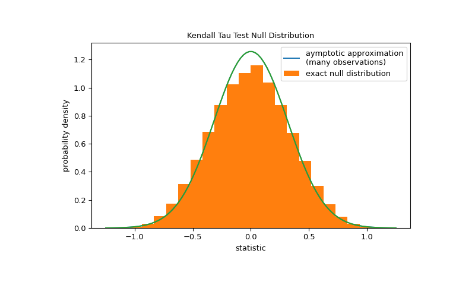

scipy.stats.kendalltau(x, y, *, initial_lexsort=<objectobject>, nan_policy='propagate', method='auto', variant='b', alternative='two-sided')[source]#
Calculate Kendall’s tau, a correlation measure for ordinal data.
Kendall’s tau is a measure of the correspondence between two rankings.
Values close to 1 indicate strong agreement, and values close to -1
indicate strong disagreement. This implements two variants of Kendall’s
tau: tau-b (the default) and tau-c (also known as Stuart’s tau-c). These
differ only in how they are normalized to lie within the range -1 to 1;
the hypothesis tests (their p-values) are identical. Kendall’s original
tau-a is not implemented separately because both tau-b and tau-c reduce
to tau-a in the absence of ties.
Parameters:
x, yarray_like
Arrays of rankings, of the same shape. If arrays are not 1-D, they
will be flattened to 1-D.
initial_lexsortbool, optional, deprecated
This argument is unused.
Deprecated since version 1.10.0: kendalltau keyword argument initial_lexsort is deprecated as it
is unused and will be removed in SciPy 1.14.0.
Defines how to handle when input contains nan.
The following options are available (default is ‘propagate’):
‘propagate’: returns nan
‘raise’: throws an error
‘omit’: performs the calculations ignoring nan values
method{‘auto’, ‘asymptotic’, ‘exact’}, optional
Defines which method is used to calculate the p-value [5].
The following options are available (default is ‘auto’):
‘auto’: selects the appropriate method based on a trade-off
between speed and accuracy
‘asymptotic’: uses a normal approximation valid for large samples
‘exact’: computes the exact p-value, but can only be used if no ties
are present. As the sample size increases, the ‘exact’ computation
time may grow and the result may lose some precision.
variant{‘b’, ‘c’}, optional
Defines which variant of Kendall’s tau is returned. Default is ‘b’.
where P is the number of concordant pairs, Q the number of discordant
pairs, T the number of ties only in x, and U the number of ties only in
y. If a tie occurs for the same pair in both x and y, it is not
added to either T or U. n is the total number of samples, and m is the
number of unique values in either x or y, whichever is smaller.
References
[1]
Maurice G. Kendall, “A New Measure of Rank Correlation”, Biometrika
Vol. 30, No. 1/2, pp. 81-93, 1938.
Kershenobich, D., Fierro, F. J., & Rojkind, M. (1970). The
relationship between the free pool of proline and collagen content
in human liver cirrhosis. The Journal of Clinical Investigation,
49(12), 2246-2249.
B. Phipson and G. K. Smyth. “Permutation P-values Should Never Be
Zero: Calculating Exact P-values When Permutations Are Randomly
Drawn.” Statistical Applications in Genetics and Molecular Biology
9.1 (2010).
Examples
Consider the following data from [6], which studied the relationship
between free proline (an amino acid) and total collagen (a protein often
found in connective tissue) in unhealthy human livers.
The x and y arrays below record measurements of the two compounds.
The observations are paired: each free proline measurement was taken from
the same liver as the total collagen measurement at the same index.
>>> importnumpyasnp>>> # total collagen (mg/g dry weight of liver)>>> x=np.array([7.1,7.1,7.2,8.3,9.4,10.5,11.4])>>> # free proline (μ mole/g dry weight of liver)>>> y=np.array([2.8,2.9,2.8,2.6,3.5,4.6,5.0])
These data were analyzed in [7] using Spearman’s correlation coefficient,
a statistic similar to to Kendall’s tau in that it is also sensitive to
ordinal correlation between the samples. Let’s perform an analogous study
using Kendall’s tau.
The value of this statistic tends to be high (close to 1) for samples with
a strongly positive ordinal correlation, low (close to -1) for samples with
a strongly negative ordinal correlation, and small in magnitude (close to
zero) for samples with weak ordinal correlation.
The test is performed by comparing the observed value of the
statistic against the null distribution: the distribution of statistic
values derived under the null hypothesis that total collagen and free
proline measurements are independent.
For this test, the null distribution for large samples without ties is
approximated as the normal distribution with variance
(2*(2*n+5))/(9*n*(n-1)), where n=len(x).
The comparison is quantified by the p-value: the proportion of values in
the null distribution as extreme or more extreme than the observed
value of the statistic. In a two-sided test in which the statistic is
positive, elements of the null distribution greater than the transformed
statistic and elements of the null distribution less than the negative of
the observed statistic are both considered “more extreme”.
Note that there is slight disagreement between the shaded area of the curve
and the p-value returned by kendalltau. This is because our data has
ties, and we have neglected a tie correction to the null distribution
variance that kendalltau performs. For samples without ties, the shaded
areas of our plot and p-value returned by kendalltau would match exactly.
If the p-value is “small” - that is, if there is a low probability of
sampling data from independent distributions that produces such an extreme
value of the statistic - this may be taken as evidence against the null
hypothesis in favor of the alternative: the distribution of total collagen
and free proline are not independent. Note that:
The inverse is not true; that is, the test is not used to provide
evidence for the null hypothesis.
The threshold for values that will be considered “small” is a choice that
should be made before the data is analyzed [8] with consideration of the
risks of both false positives (incorrectly rejecting the null hypothesis)
and false negatives (failure to reject a false null hypothesis).
Small p-values are not evidence for a large effect; rather, they can
only provide evidence for a “significant” effect, meaning that they are
unlikely to have occurred under the null hypothesis.
For samples without ties of moderate size, kendalltau can compute the
p-value exactly. However, in the presence of ties, kendalltau resorts
to an asymptotic approximation. Nonetheles, we can use a permutation test
to compute the null distribution exactly: Under the null hypothesis that
total collagen and free proline are independent, each of the free proline
measurements were equally likely to have been observed with any of the
total collagen measurements. Therefore, we can form an exact null
distribution by calculating the statistic under each possible pairing of
elements between x and y.
>>> defstatistic(x):# explore all possible pairings by permuting `x`... returnstats.kendalltau(x,y).statistic# ignore pvalue>>> ref=stats.permutation_test((x,),statistic,... permutation_type='pairings')>>> fig,ax=plt.subplots(figsize=(8,5))>>> plot(ax)>>> bins=np.linspace(-1.25,1.25,25)>>> ax.hist(ref.null_distribution,bins=bins,density=True)>>> ax.legend(['aymptotic approximation\n(many observations)',... 'exact null distribution'])>>> plot(ax)>>> plt.show()

>>> ref.pvalue0.12222222222222222 # exact p-value
Note that there is significant disagreement between the exact p-value
calculated here and the approximation returned by kendalltau above. For
small samples with ties, consider performing a permutation test for more
accurate results.